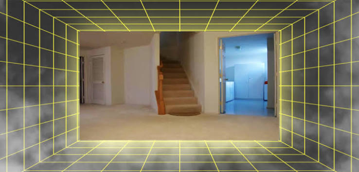

clic jusqu'à en avoir mal à la main
+
archiver l'obscolescence d'un espace disparu
aie aie le bruit du clic
Le musée, lieu fantastique, lieu absent de tout lieu, a pour rôle de conserver mes œuvres d’art à travers les âges, niant ainsi l’histoire et la mort. Il se met hors lieu et hors temps. (Lebensztejn, 1981)
inconnu

portail II